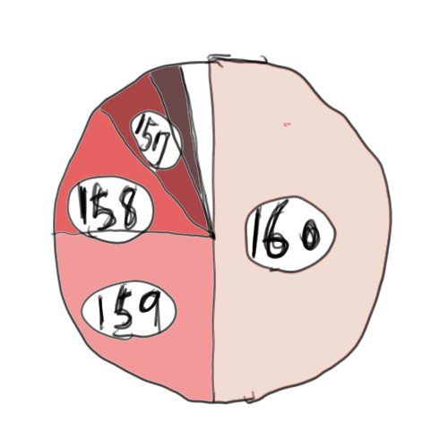

FindNodeでネットワークを構築する
- FindNodeクエリでネットワークを構築する
- リスポンスを受けたらRootingTableを更新する
前章で、kBucketとRootingTableについては説明しました。このRootinhTableを更新しながら、実際にDHTのネットワークを組んでみましょう。
FindNodeクエリでネットワークを構築する
Mainline DHT こと、KademliaではUDPを利用してPeerどうしが通信を行います。
DHRのネットワークを構築は、FindNodeクエリとFindNodeレスポンスのみで実現しています。
本章では、FindNodeクエリについて解説していきます。
指定したKIDに近い距離にあるPeerを紹介してもらう事ができる
FindNodeクエリを利用すると事で、指定したKIDともっとも距離が近いNodeを教えてもらう事ができます。
以下のようなBencodeで表現できます。
arguments:
{
"t":"aa",
"y":"q",
"q":"find_node",
"a":{
"id" : "<nodes id>",
"target" : "<id of target node>"
}
}
response:
{
"t":"aa",
"y":"r",
"r":{
"id" : "<nodes id>",
"nodes" : "<compact node info>"
}
}
"t" は送信側が任意に決める事ができる値です。レスポンスには、送信時に指定した値が渡されます。この値を元にどのクエリのレスポンスかを判断する事がてきます。
"id"には、クエリを送信するPeerのKIDがして入ります。 "target"に指定したKIDと距離が近いPeerが帰りまする "nodes" は、26byteのbyteデータの集まりで、20byteのPeer IDとIPとPort番号が格納されています。
ネッワークへの参加/構築
ネットワークの構築はFindNodeクエリを利用します。我々は、自分に近いKIDを持つPeerについて詳しくなる必要があるのでした。
"id" に自分自信のPeer ID を指定して、 Node の一覧を取得します。 Rooting Table の中の上位 K個について、 FindNode を行います。この上位K個が固定されまで、 FindNod eを繰り返します。
なんども、この操作を繰り返しているうちに、DHT上でもっとも自分自信に近いPeerを発見できまます。
実際に1000個のPeerを生成して、試してみると以下の分布を得ることができました。 Kは8としました。
| Rooting Table index | Peerの数 | コメント |
|---|---|---|
| 0 | 1 | 自分自信です |
| 147 | 1 | .. |
| 154 | 1 | .. |
| 155 | 4 | .. |
| 156 | 4 | .. |
| 157 | 6 | .. |
| 158 | 8 | .. |
| 159 | 8 | .. |
| 160 | 8 | .. |
TorrentのDHTネットワークに接続した場合も同じような結果になります。自分自信に近いNodeは、Rooting Tabe index の、l130-150くらいのところに集まります。

実際にグラフに直してみると、150の付近で相当近くにあPeerである事がわかります。
ref http://www.bittorrent.org/beps/bep_0005.html
Kyorohiro work